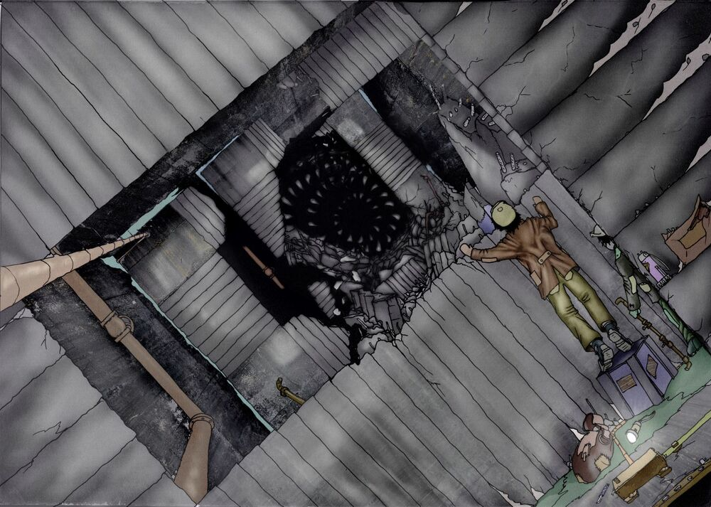

Если как следует озадачиться вопросом и потратить непозволительное количество времени, в старых архивах можно отыскать некие "Записки блочного фельдшера", в которых впервые появляется Гнилушка. На основе этих записок была выдвинута теория о том, что Гнилушка является …
Читать

Бетоноеды – часть фауны Гигахруща. Не являются постсамосборными организмами, в привычном понимании этого термина, так как не найдено доказательств того, что они собираются сами…
Читать